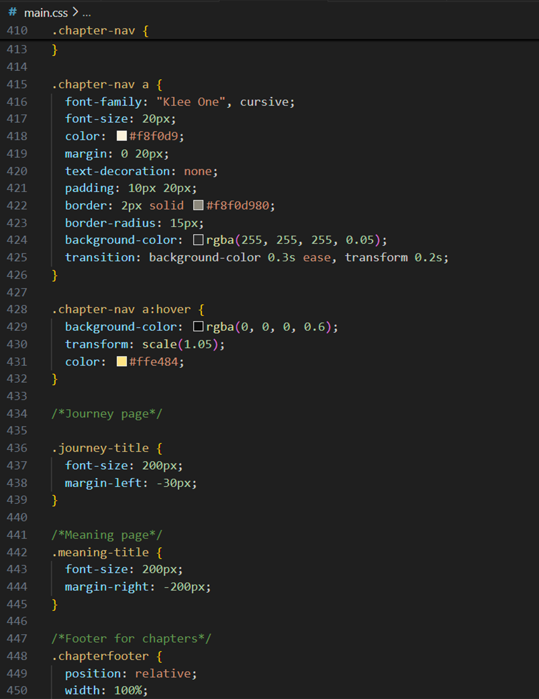
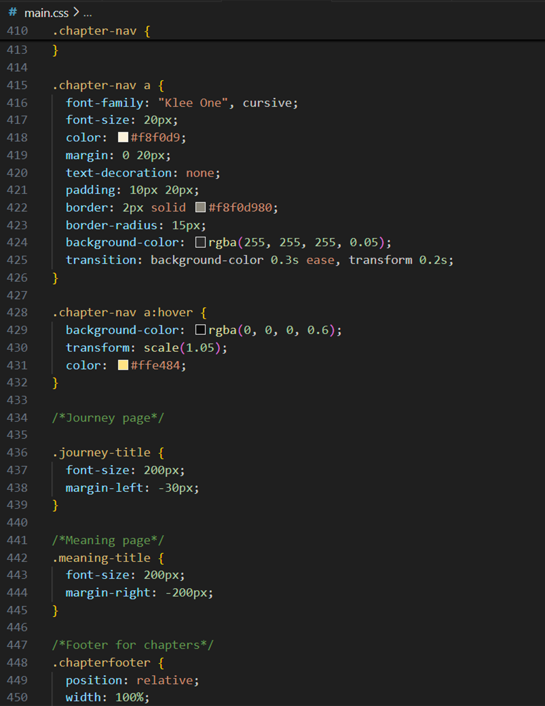

Обо мне

Добро пожаловать в моё творческое путешествие! Меня зовут Дарья, я графический дизайнер с любовью к визуальному повествованию. Маленький принц всегда был для меня источником вдохновения — это вечная история, полная чудес, мудрости и воображения. Создавая этот сайт, я стремилась передать волшебство книги и создать захватывающий, визуально насыщенный опыт.
Смотрите больше моих работ: Behance
Подписывайтесь на меня в: Instagram
 
